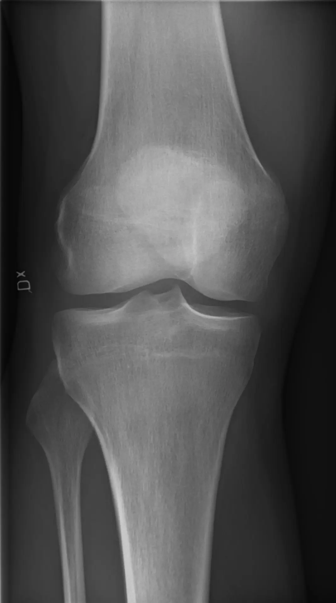
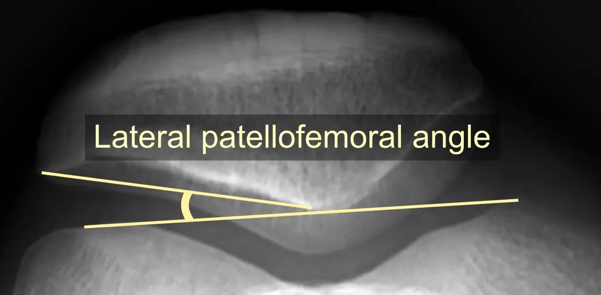

الرضفة
تنقل قوة عضلة الفخذ عبر آلية بسط الركبة؛ يتغيّر الحمل عليها مع زاوية الثني.
ألم مقدمة الركبة حول الرضفة أو خلفها شائع مع الدرج والقرفصاء والجري والجلوس الطويل. لا يعني الألم تلقائيًا تلف الغضروف. يرتكز العلاج على فهم الأحمال وتقوية الركبة والورك والتدرج في العودة للنشاط، مع التحقق من الأسباب الأخرى عند الفحص.



تنقل قوة عضلة الفخذ عبر آلية بسط الركبة؛ يتغيّر الحمل عليها مع زاوية الثني.
سطح التقاء الرضفة بالفخذ هو أحد مصادر ألم المقدمة، لكنه يحتاج تقييمًا سريريًا.
التحكم بحركة الطرف كله يؤثر في الحركة؛ لا تختزل الحالة في اتجاه الرضفة وحده.
يظهر الألم أثناء أنشطة تحمل الوزن مع ثني الركبة، مثل الدرج والجلوس والقيام والقرفصاء. قد يصيب ركبة واحدة أو الاثنتين، وقد يترافق مع أصوات لا تدل وحدها على ضرر.
زيادة الجري أو القفز أو تغيير التدريب بسرعة قد تتجاوز قدرة الأنسجة الحالية. لا يوجد عامل واحد يفسر كل الحالات؛ القوة والتعافي والتحكم بالحركة والتاريخ السابق تؤثر في الخطة.
تورم كبير أو قفل حقيقي أو عدم ثبات بعد إصابة أو عجز عن بسط الركبة يتطلب تقييمًا مختلفًا. ألم موضّع في الوتر أو خلع الرضفة لهما مساران علاجيان خاصان.
يقيّم الطبيب موضع الألم ومدى الحركة وقوة الفخذ والورك وطريقة القرفصاء أو نزول الدرجة. تُراجع تغيّرات التدريب والنشاط والقدرة الحالية بدل الاعتماد على اختبار منفرد.
في الأعراض النموذجية قد لا نحتاج تصويرًا في البداية. الأشعة أو الرنين تُطلب عند إصابة، أو أعراض غير معتادة، أو عدم تحسن يستدعي مراجعة التشخيص.
نحدد الأنشطة المؤلمة ومستوى العودة المطلوب. مسافة الجري أو نزول الدرج أو تحمل الجلوس مؤشرات عملية نستخدمها لمتابعة التحسن.
تقوية الركبة، ومعها الورك بحسب الحاجة، أساس العلاج. يُختار المدى والمقاومة والتكرار وفق القدرة؛ ليس مطلوبًا أداء تمرين مؤلم بشدة حتى يصبح فعالًا.
قد نقلل الجري والقفز أو عمق القرفصاء مع الحفاظ على نشاط محتمل. العودة تكون تدريجية، وزيادة الحمل تعتمد على استجابة الألم والوظيفة في اليوم التالي.
قد يفيد التثبيت بالشريط أو فرشات جاهزة لدى بعض المرضى كوسيلة مساعدة. لا تستبدل برنامج التمارين، ولا توجد حاجة روتينية للجراحة أو الحقن في الألم الرضفي المعتاد.
يُختار المستوى بحسب الألم والقدرة، وتُزاد الجرعة تدريجيًا وفق استجابة الركبة أثناء التمرين وفي اليوم التالي.
تُؤدّى تمارين القوة غالبًا 2–3 مرات أسبوعيًا مع يوم راحة بين الجلسات. ابدأ بالحد الأدنى من التكرارات، ثم زد التكرار، وبعده المجموعات، ثم المقاومة أو عمق الحركة.
يُقبل ألم خفيف لا يتجاوز تقريبًا 2–3 من 10 إذا عاد إلى مستواه المعتاد خلال 24 ساعة. إذا زاد الألم بوضوح أو استمر لليوم التالي، خفّض المدى أو التكرار أو المقاومة بنسبة 20–30٪.
الجرعة: 10 تكرارات مع تثبيت 5 ثوانٍ × مجموعتين، ويمكن أداؤه يوميًا.
التدرّج: زد التثبيت إلى 8–10 ثوانٍ، ثم انتقل لتمارين التحميل عند تحمّلها.
الهدف: تنشيط عضلة الفخذ.
الجرعة: 8–12 تكرارًا × مجموعتين، 3 مرات أسبوعيًا.
التدرّج: زد إلى 3 مجموعات، ثم أضف مقاومة أو انتقل للجسر بساق واحدة.
الهدف: تقوية الأرداف والجذع.
الجرعة: 8–12 تكرارًا × مجموعتين لكل جهة، 3 مرات أسبوعيًا.
التدرّج: زد إلى 3 مجموعات، ثم استخدم رباط مقاومة مناسبًا.
تنبيه: تجنب دوران الحوض للخلف.
الجرعة: 8–12 تكرارًا × 2–3 مجموعات، 3 مرات أسبوعيًا.
التدرّج: استخدم كرسيًا أخفض تدريجيًا، ثم أضف مقاومة خفيفة.
الهدف: تحسين القوة الوظيفية ومحور الركبة.
الجرعة: 6–10 تكرارات × مجموعتين لكل ساق، 2–3 مرات أسبوعيًا.
التدرّج: زد ارتفاع الدرجة أو عدد التكرارات مع ثبات محور الركبة.
الهدف: التحكم أثناء نزول الدرج.
الجرعة: 6–10 تكرارات × مجموعتين لكل جهة، 2–3 مرات أسبوعيًا.
التدرّج: زد العمق أولًا، ثم المجموعات، ثم المقاومة.
الهدف: زيادة تحمل الطرف تدريجيًا.
الجرعة: 6–10 تكرارات × مجموعتين لكل ساق، 2–3 مرات أسبوعيًا.
التدرّج: زد العمق ثم المقاومة مع الحفاظ على التحكم قبل رفع السرعة.
الجرعة: 5–8 قفزات × مجموعتين، مرتين أسبوعيًا مع راحة كافية.
التدرّج: ابدأ بقفز منخفض في المكان، ثم زد المسافة أو الاتجاه، وليس كليهما معًا.
الجرعة الابتدائية: دقيقة جري يتبعها 1–2 دقيقة مشي لمدة 15–20 دقيقة، 2–3 مرات أسبوعيًا وبين الجلسات 48 ساعة.
التدرّج: زد مدة الجري أو المسافة بنحو 10٪ عند استقرار الأعراض، ولا ترفع السرعة والمسافة والتلال في الأسبوع نفسه.
انتقل للمرحلة الثانية عند أداء تمارين البداية دون زيادة تستمر لليوم التالي. وانتقل للمرحلة الثالثة بعد أداء الجلوس والوقوف ونزول الدرجة والقرفصاء المنقسمة بتحكم جيد، ومن دون تورم أو تفاقم مستمر. إذا لم تستقر الأعراض خلال 24 ساعة، ارجع خطوة وخفّض الجرعة.
لا. الجراحة ليست علاجًا روتينيًا لـPFPS، وتُبحث فقط عند وجود مشكلة بنيوية محددة وبعد تقييم متخصص.
التحسن قد يحتاج أسابيع إلى أشهر، خصوصًا مع أعراض طويلة. إعادة التقييم مناسبة إذا لم تتحسن الوظيفة أو ازداد التورم أو تغير نمط الألم.
تبدأ بزيادة مدة النشاط ثم شدته وصعوبة الحركة. التحكم بالقرفصاء والدرج وتحمل التدريب دون تفاقم مستمر أهم من انتظار يوم لا يوجد فيه أي إحساس بالركبة.
إجابات عملية تكمل الشرح، وتساعدك على مناقشة الخطة مع الطبيب.
لا. المصطلح يصف نمط ألم، ولا يثبت وحده وجود تلف غضروفي.
غالبًا نعدل المسافة والسرعة والتلال مؤقتًا ثم نعود تدريجيًا بدل التوقف المطول.
نعم، وغالبًا تُدمج مع تمارين الركبة لتحقيق تحسن أفضل في الألم والوظيفة.
يختلف حسب مدة الأعراض والحمل والالتزام، ويكون التحسن تدريجيًا لا فوريًا.
المصطلحان ليسا متطابقين. الألم الرضفي تشخيص سريري، بينما وصف الغضروف يتعلق بتغير بنيوي لا يفسر الألم دائمًا.
لا عادة؛ يمكن تقليل العمق والمقاومة واستخدام دعم ثم التدرج. الألم الحاد أو المتزايد يستدعي تعديل التمرين.
قد يكفي خفض المدة أو التكرار وتغيير التدريب مؤقتًا. الاستمرار أو التوقف يُحددان بحسب الأعراض والفحص.
نعم قد يحدث. تغيير وضع الركبة وفترات الحركة القصيرة يساعد، لكن الأعراض المستمرة تحتاج تقييمًا.
الصوت غير المؤلم دون تورم أو قفل شائع، ولا يكفي لتشخيص تآكل الغضروف.
قد يعود مع زيادة الحمل بسرعة. الحفاظ على القوة والتدرج في التدريب يقللان احتمال تكرر الأعراض.
إذا استمر ألم مقدمة الركبة أو حدّ من الرياضة والدرج، يفيد التقييم في تأكيد التشخيص وبناء برنامج يناسب نشاطك.
دليل أفضل ممارسة للألم الرضفي الفخذي — BJSM 2024
تختلف توصيات الإرشادات بحسب نوع الإصابة ونطاقها. الجرعات والقيود ومواعيد العودة تُفصّل بعد الفحص؛ تُذكر الفوائد المحتملة دون ضمان لنتيجة علاجية.
مصادر الرسوم وتراخيص استخدامها موثقة أسفل كل صورة. مجموعة Bioicons.